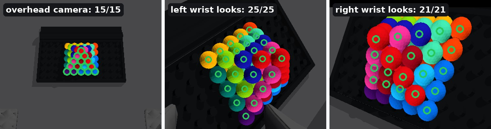

Piece 8 was knocked off target as the gripper let go

Fix Open the gripper all at once, so both fingers let go together.
After The piece drops straight down and lands 1.0 mm off.


done, checkedrunningon error → stop↻ looks againClick a step or a piece to jump.
arrows: the piece's x / y / z axes (red, green, blue), left behind as it turnsyellow: its path

